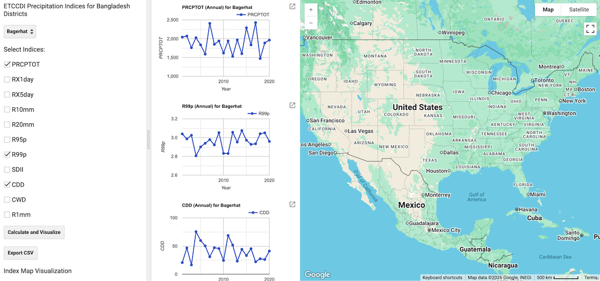
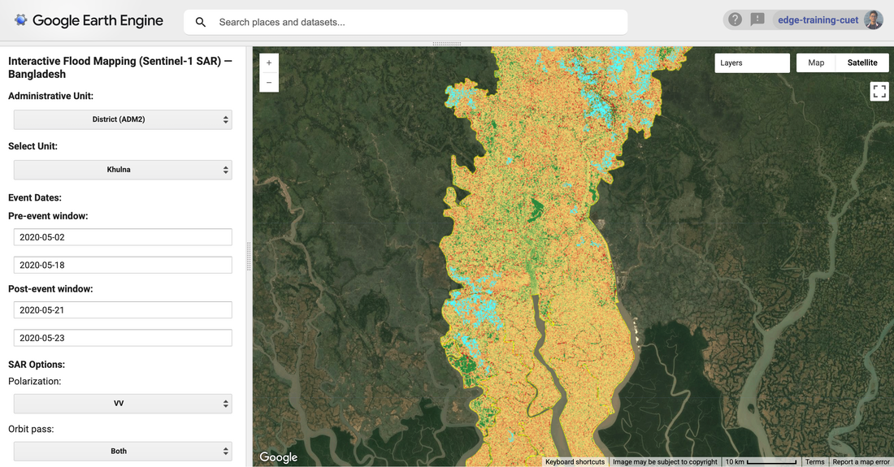
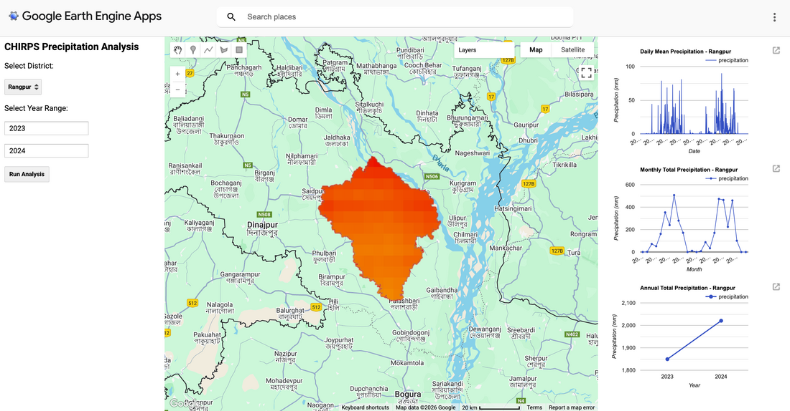
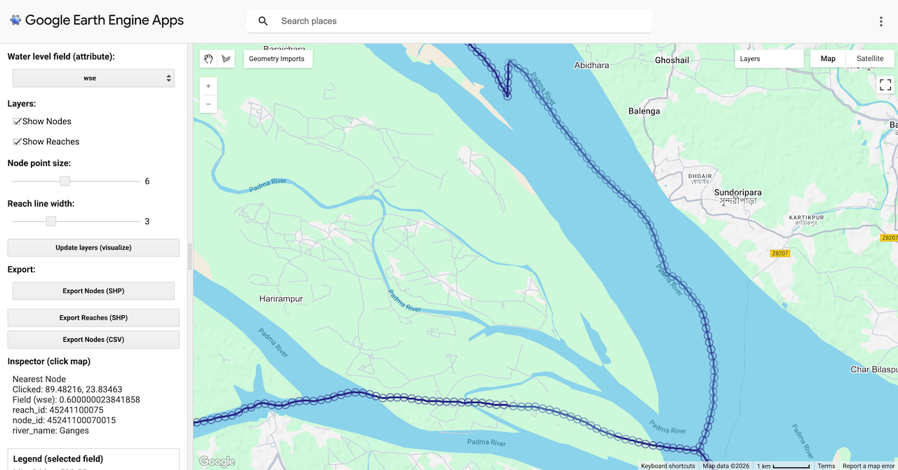
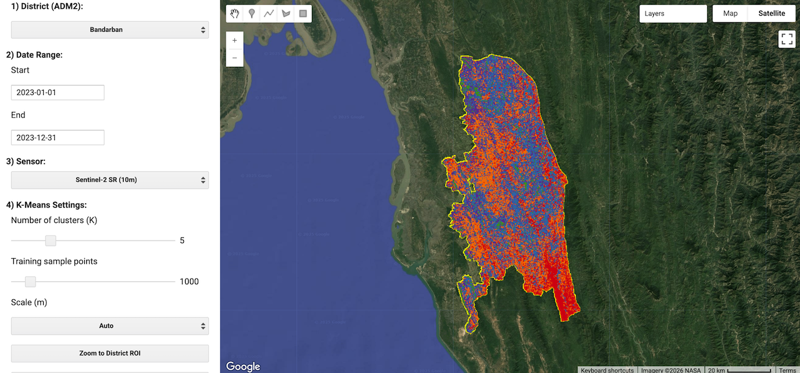
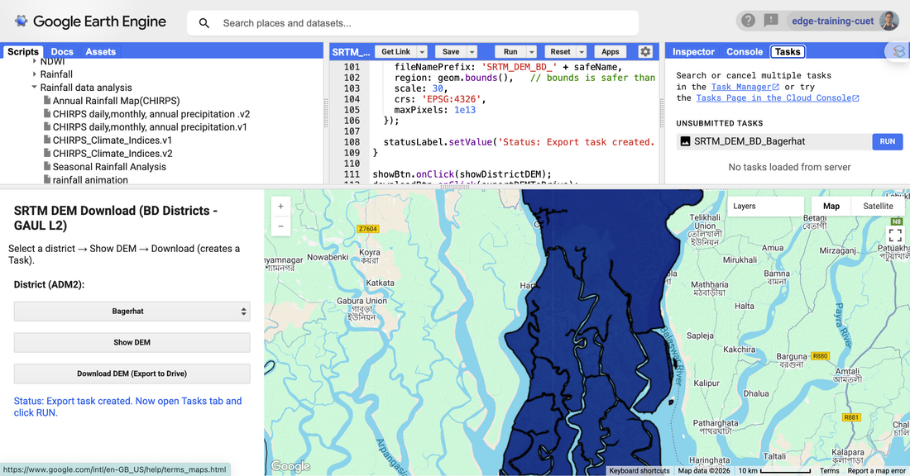

Google Earth Engine Apps & Tools
Open-access, cloud-based geospatial web applications built on Google Earth Engine (GEE) for satellite flood mapping, climate extreme indices analysis, precipitation exploration, river water level monitoring, land cover classification, and DEM extraction. Click any screenshot to enlarge.
Interactive cloud applications
Designed for researchers, hydrologists, planners, and students working in data-scarce regions.

ETCCDI Precipitation Climate Extreme Indices Analysis Tool
Computes and visualizes ETCCDI-recommended precipitation extreme indices across any district of Bangladesh using long-term CHIRPS daily satellite rainfall data. Supports dynamic visualization and CSV export of PRCPTOT, Rx1day, Rx5day, R10mm, R20mm, R95p, R99p, CDD, and CWD with interactive annual time-series plots.

Flood Mapping & Visualisation Tool (Sentinel-1 SAR)
Rapidly maps and quantifies flood inundation at District (ADM2) or Upazila (ADM3) scales using pre- and post-event Sentinel-1 Synthetic Aperture Radar (SAR) imagery, with permanent water masking, slope filtering, and flooded LULC statistics.
How to Use the Tool
- Choose Administrative Unit: District (ADM2) or Upazila (ADM3) and select your target unit.
- Set Pre-event and Post-event date ranges (YYYY-MM-DD), Polarization (VV/VH), and Orbit pass.
- Adjust Speckle filter radius, backscatter threshold, max slope, and minimum patch size.
- Tick/untick Mask permanent water and Compute flooded LULC as required.
- Click Run Flood Mapping to inspect pre/post SAR, change ratio, and flood extent, or export GeoTIFF/CSV to Google Drive.

Precipitation Data Download, Analysis & Visualisation App
Interactive cloud platform for district-level spatial aggregation and temporal analysis of daily, monthly, and annual precipitation using CHIRPS data. Dynamically plots daily mean rainfall, monthly cumulative totals, and interannual trends with direct CSV export.

SWOT River Water Level Data Visualisation & Downloading App
Explores river networks and water surface elevation attributes using the Surface Water and Ocean Topography River Database (SWORD). Users can draw custom polygons on the map to filter river nodes and reaches and inspect spatial variations in water surface elevation.

LULC Classification Using Unsupervised Classification
Generates custom Land Use and Land Cover (LULC) maps for any district of Bangladesh over user-defined periods. Uses unsupervised K-Means clustering on multispectral satellite imagery with configurable cluster counts and training sample sizes.

SRTM Digital Elevation Model (DEM) Downloading Tool
Streamlines clipping, visualization, and GeoTIFF export of Shuttle Radar Topography Mission (SRTM) Digital Elevation Models for any administrative district to support HEC-HMS, HEC-RAS, and GIS watershed delineation.
Step-by-Step Export Guide
- Open the Web App or paste the script into the GEE Code Editor and click Run.
- Select a target district from the District (ADM2) dropdown and click Show DEM.
- Click Download DEM (Export to Drive), then run the export task in the Tasks tab to save the
.tiffile to Google Drive.
Modelling, programming & geospatial toolkit
Hydrodynamic & Hydrologic Models
Coupled 2D/3D coastal, riverine, and urban stormwater simulation frameworks:
Scientific Python & Data Science
Automated climate data processing, multidimensional netCDF/gridded analytics, and machine learning:
GIS & UAV Drone Photogrammetry
Cloud geospatial processing, spatial multi-criteria analysis, and UAV terrain modelling: